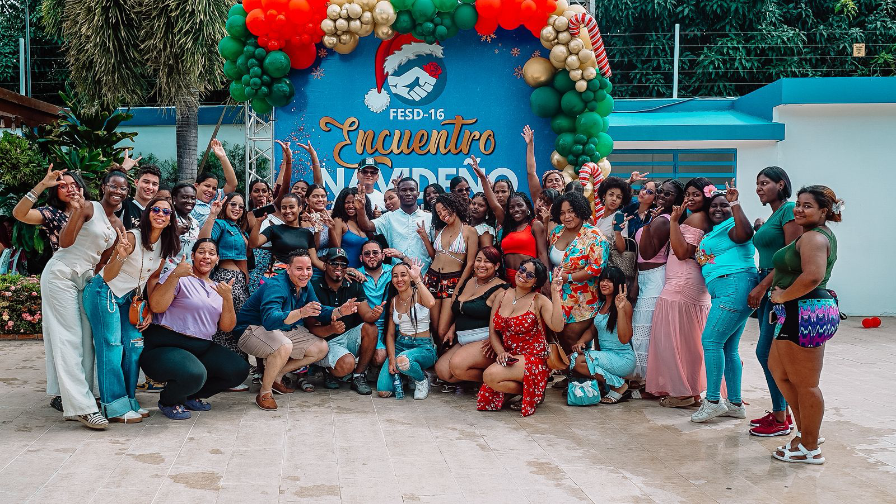
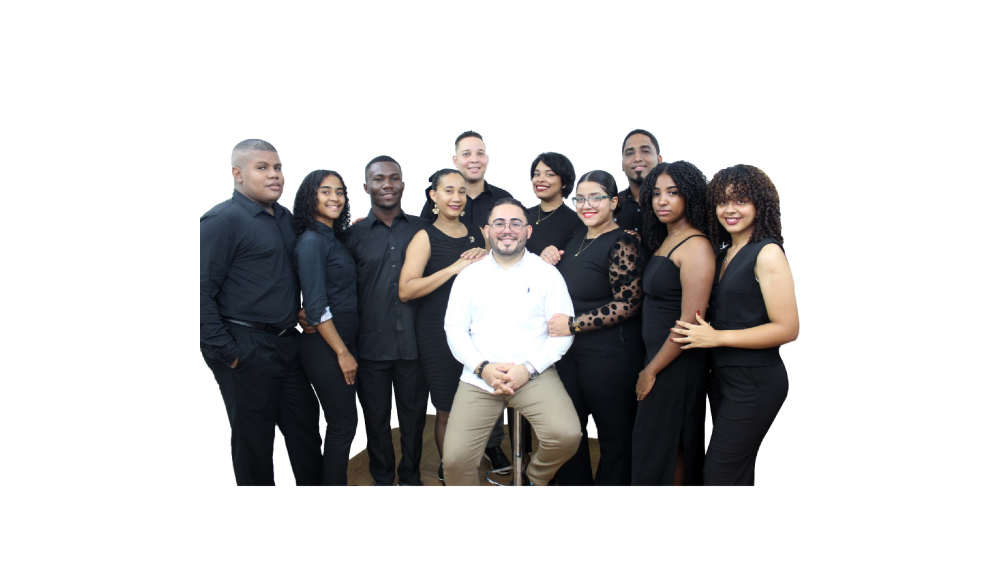
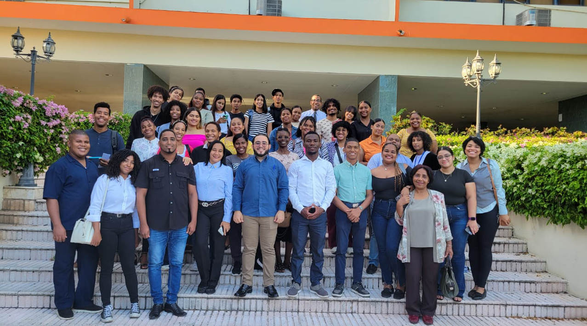
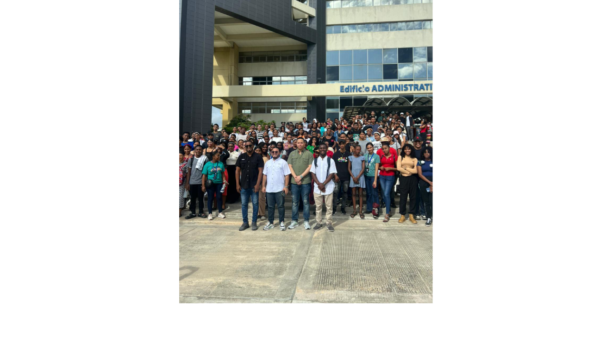
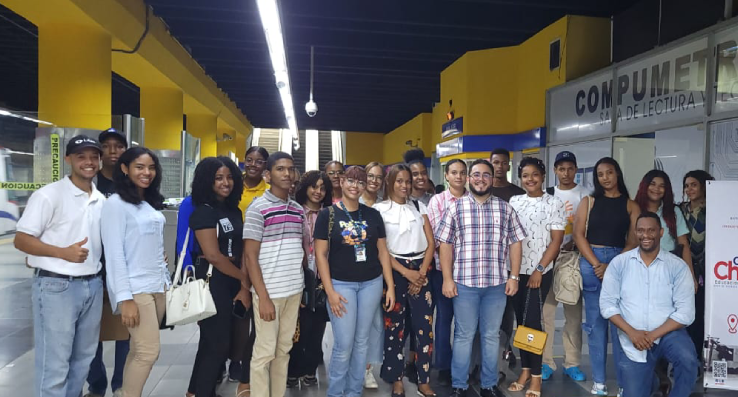
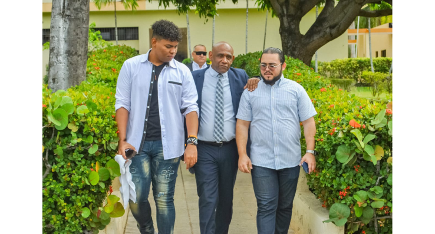
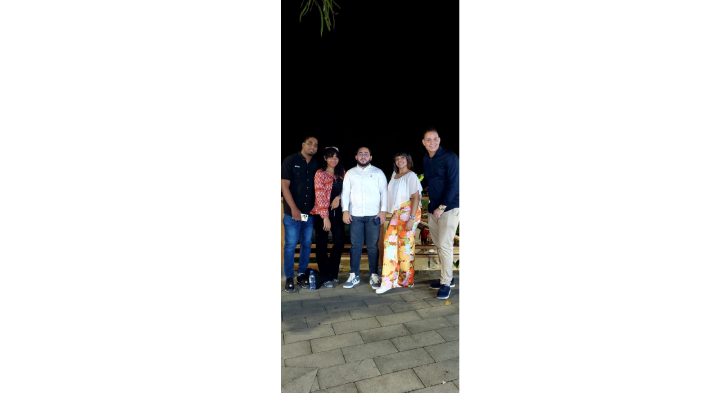
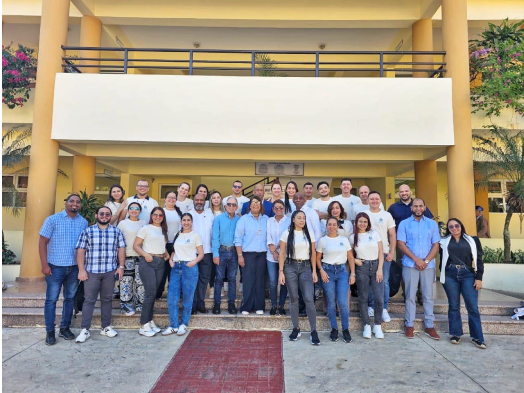
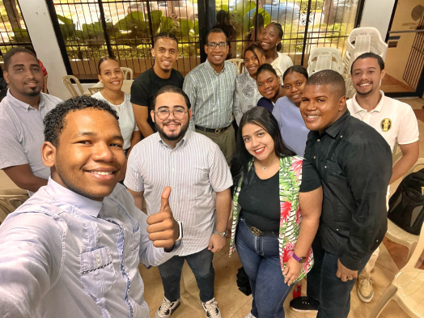

Equipo AGM
El equipo AGM fue creado por el actual dirigente estudiantil del FESD-16, Arnaldo Guillén Morel, como una iniciativa orientada a fortalecer la participación, la integración y la representación del estudiantado dentro de la Universidad Autónoma de Santo Domingo (UASD).

Esta organización surge bajo el lema “Juntos somos más fuertes”, el cual refleja el espíritu de unidad, trabajo colectivo y compromiso social que caracteriza al equipo.

El propósito fundamental del equipo AGM es incluir activamente a los estudiantes uasdianos en las distintas actividades estudiantiles, promoviendo espacios de participación democrática, liderazgo juvenil y conciencia social.

Asimismo, busca contribuir a la mejora de la estancia universitaria de los estudiantes, apoyando iniciativas que fomenten el bienestar académico, social y cultural dentro del campus.

Desde su creación, el equipo AGM se ha consolidado como un brazo de apoyo del Frente Estudiantil Socialista Democrático (FESD-16), trabajando de manera coordinada con su comité organizativo.

Actualmente, el equipo AGM ha participado activamente en diversos eventos, actividades y logros encabezados y/o gestionados por el dirigente estudiantil Arnaldo Guillén, en conjunto con el comité del FESD-16.

Entre las actividades realizadas se destacan:
- Jornadas de integración estudiantil
- Actividades académicas y formativas
- Iniciativas de orientación y apoyo al estudiante
- Acciones de carácter social en beneficio de la comunidad universitaria



A través de estas participaciones, el equipo AGM ha demostrado su compromiso con el fortalecimiento del movimiento estudiantil, consolidándose como un espacio donde los estudiantes pueden expresarse, organizarse y aportar activamente al desarrollo de la UASD.